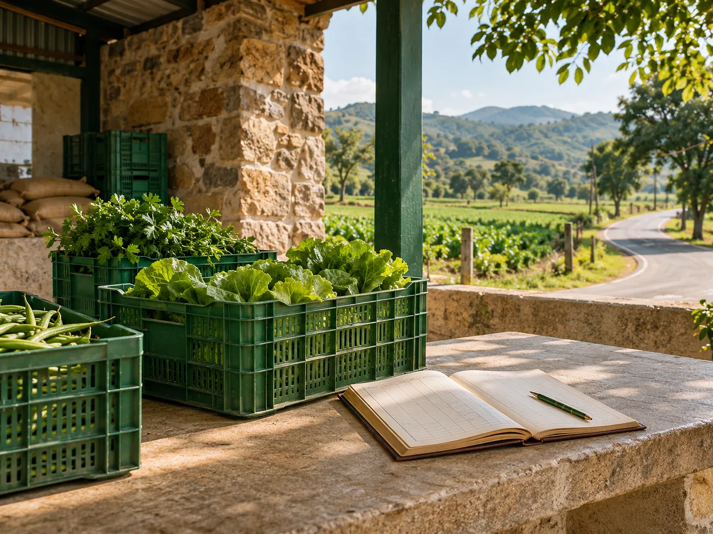
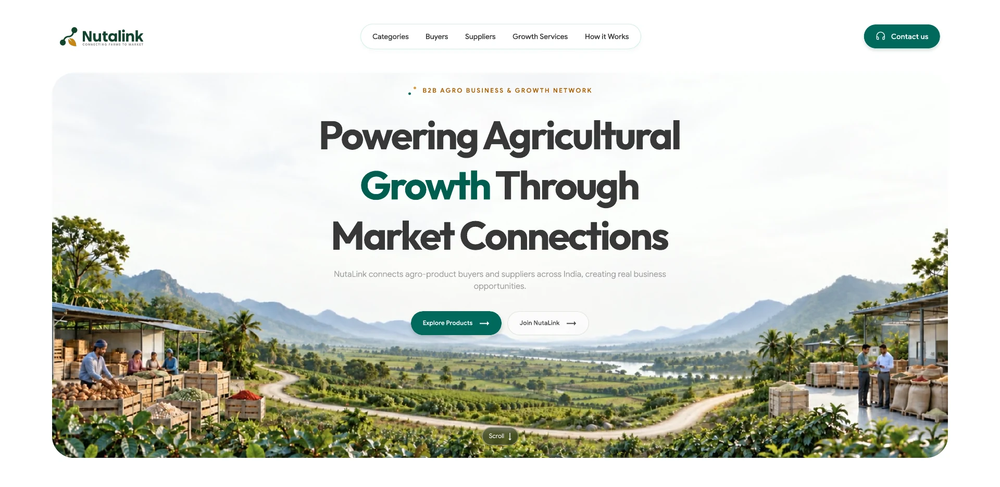

Introduce the proposition
Make the landing-page message easy to grasp.
Sole UI/UX design, interactive prototyping, and frontend implementation for a company project in testing.

NutaLink is an agricultural B2B platform. The work calls for a consistent interface across product discovery and business-oriented journeys.
A business network needs a clear introduction and consistent responsive behavior. I treated the relationship between interface design and browser implementation as a central design challenge; no user-study result is implied.
Make the landing-page message easy to grasp.
Check responsive layouts and interactions during frontend implementation.
Use reusable interface structures across the designed experience.
I moved from interface structure to interactive prototypes and responsive frontend work in one loop. Only the approved homepage preview is shown here while the project is being tested.
Understand the proposed platform and its potential relevance.
Find a clear starting point for exploring the connection model.
A simplified design map of the public or proposed experience, not a recorded user test.
A light agricultural landscape and green accents introduce the business context. The editorial harvest photograph is conceptual; the accompanying homepage image is the approved design preview.

These are design intentions. No measured outcome is implied.
Lead with a direct landing-page message
Visitors need orientation before deeper detail
A clearer first impression
Prototype and implement the frontend together
Behavior can be refined in a real browser
More consistent interaction details
Show only the approved homepage visual
Other screens are not cleared for publication
A truthful, controlled portfolio presentation
I handled UI/UX design, interaction design, prototypes, responsive layouts and frontend implementation for this company-owned project. This does not include backend ownership.
The project is in testing. The supplied landing-page design preview represents the work; no adoption figures or other product screens are shown.
After testing and approval, I can document more specific flows and implementation choices.